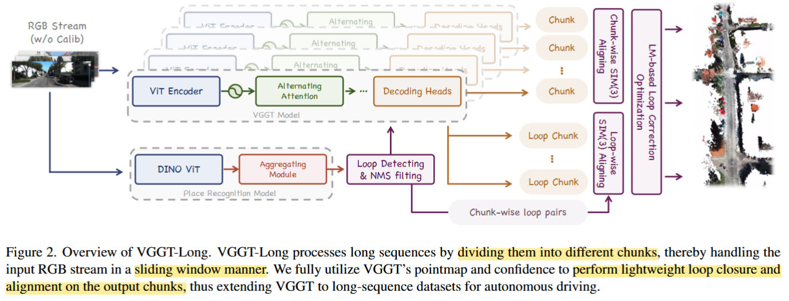
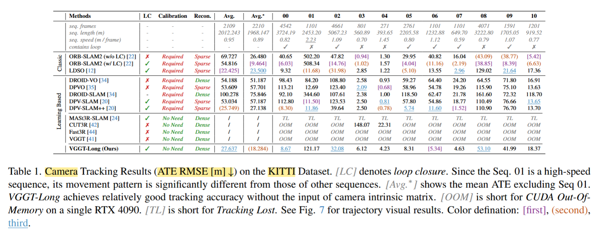
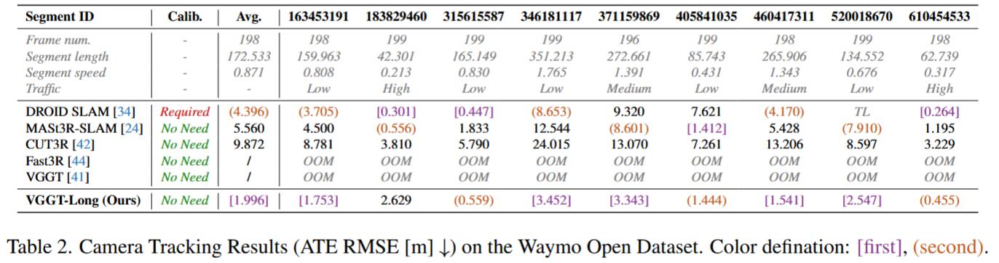
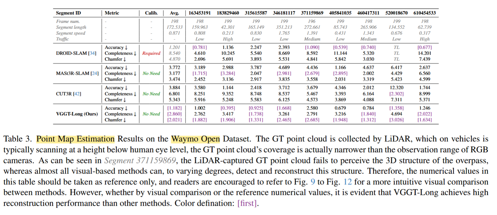

==Training Free==
VGGT 局部（少量）重建能力很强，但不能扩展到超长序列。本文把 long sequence 拆成局部子问题，再做一个轻量全局对齐把局部结果连起来。
Method

chunk → local sim(3) align → loop closure → global sim(3) optimization
长序列拆成 chunk 分别经过 VGGT，相邻 chunk 的局部对齐借助 VGGT 输出的 confidence 做 sim(3) alignment.
Sim(3) 是相似变换：平移 + 旋转 + 尺度，连尺寸一起矫正到同一个坐标系下。
（1）Sequence Chunking & Local Aligning with confidence
局部完全依赖 VGGT，得到结果后，在相邻的 chunk 里做 3D 点匹配。利用 VGGT 在局部重建中输出的 confidence，低中高置信度分配不同的权重，来进行 IRLS 优化。
（2）Loop Detection & Loop-wise SIM(3) Alignment
能力： 对整个序列回环检测，分辨非相邻 chunk & 估计这些 chunk 的 Sim(3) 变换。
先识别最可能在一个场景中的 image pair (相似度超阈值 & frame_id 隔得足够远)，还用了 NMS 避免在时间接近的帧上有冗余匹配。连接以 i 和 j 为中心的帧子序列合并成一个 loop-centric chunk，送到 VGGT 里继续做局部重建，计算 i 和 j 的 chunk 到 这个新 chunk 的对齐变换。
先找 loop 候选 → loop-centric batch → 送进 VGGT 得到新的局部 point map + confidence → 分别与 chunk i、chunk j 做 confidence-aware Sim(3) → 链式组合成闭环约束 → 放进全局 LM 优化。
（3）Global SIM(3) LM-based Optimization
把相邻 chunk 的顺序约束和远距离 chunk 的 loop 约束一起放进一个 chunk-level 的 Sim(3) 非线性最小二乘优化中，在 𝑠𝑖𝑚(3) 李代数空间用 LM 优化所有 chunk 的全局位姿变换。
Experiments & Results
CPU 无法把 VGGT 的所有输出结果都存储，所以将结果存到磁盘上，后续全局对齐的时候选择性地只把相关块对加载到CPU 内存中进行 SIM(3) 计算，计算后立即释放内存。
camera & pointmap results：



Conclusion： a framework that extends monocular RGB-only 3D reconstruction to long, unbounded video sequences using foundation models.
limitations： 强依赖 VVGT 的局部 chunk 预测质量，没有全局上下文信息交互，在复杂/稀疏场景中一旦预测不对，那后续跨 chunk 的对齐就变得不可靠了。